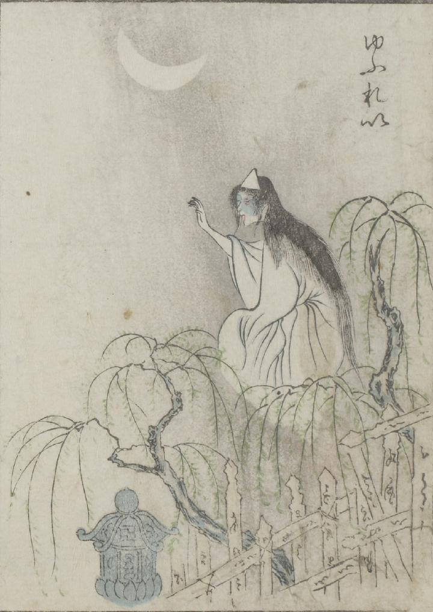

幽霊；ユウレイ，墓場；ボチ

三日月がでている夜、卒塔婆が並ぶ墓地の、柳の袂に女の幽霊が立っている。白衣の幽霊は髪が長く、三角の額紙を着けている。
出典：親書誌：U426_nichibunken_0051：怪物画本；カイブツエホン／日付：2006／資源識別子：U426_nichibunken_0051_0022_0000
Copyright (c)2010- International Research Center for Japanese Studies, Kyoto, Japan. All rights reserved.